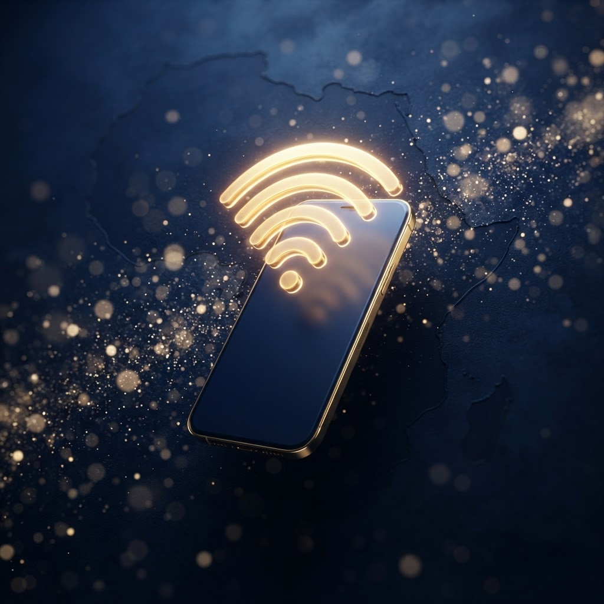
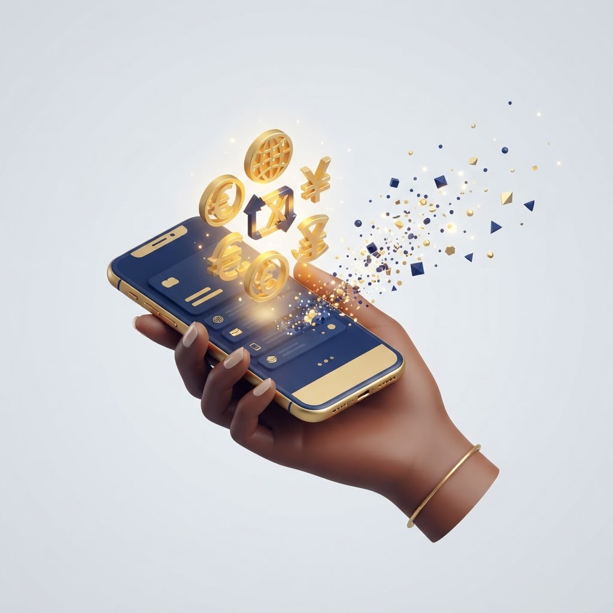
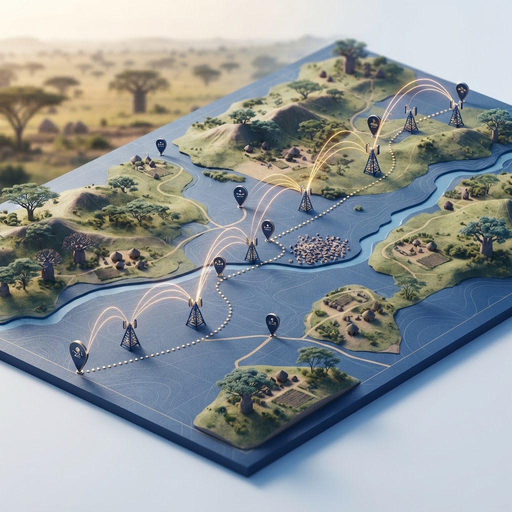
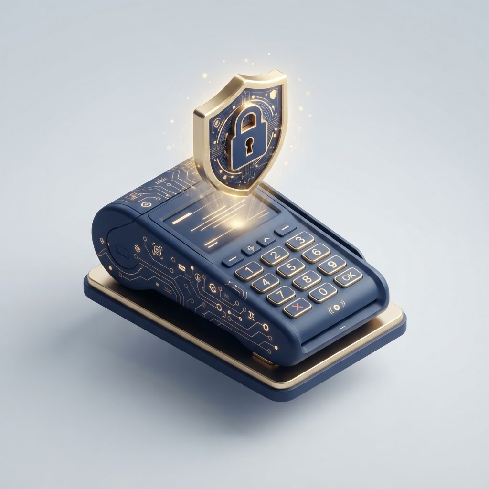
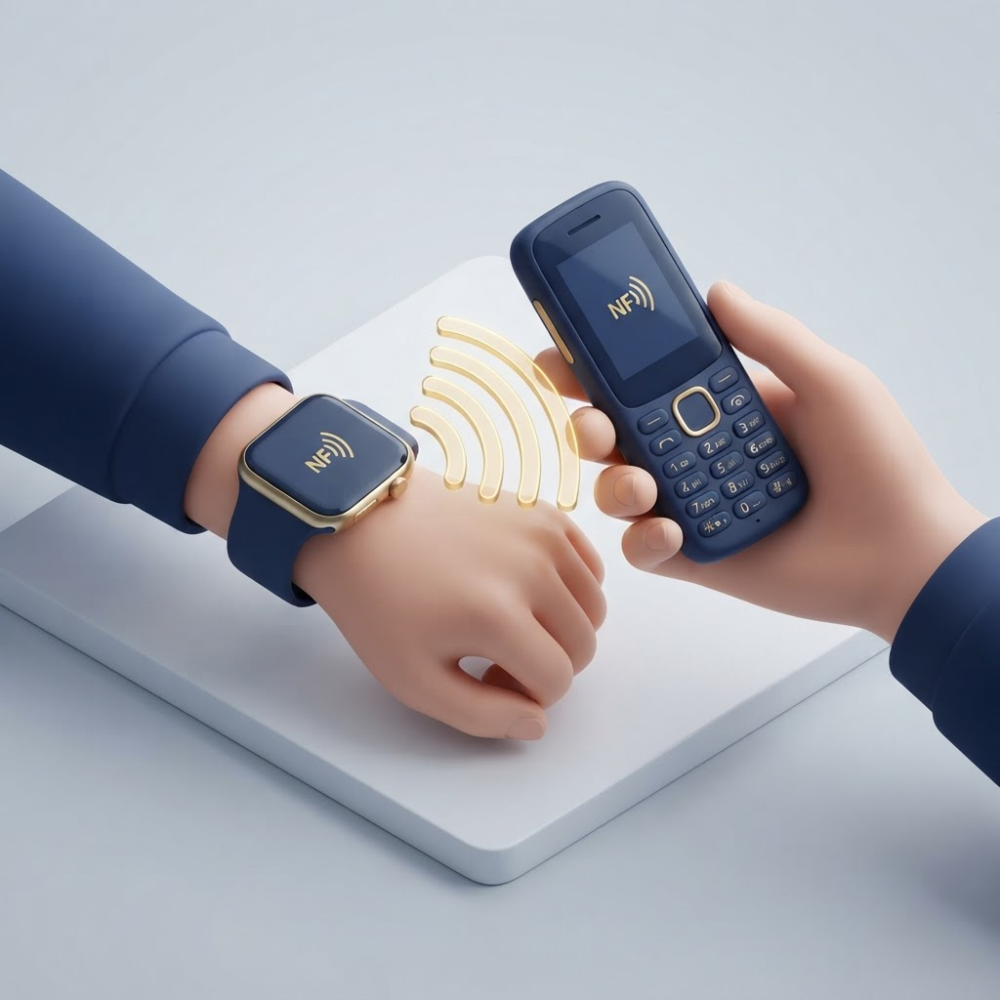
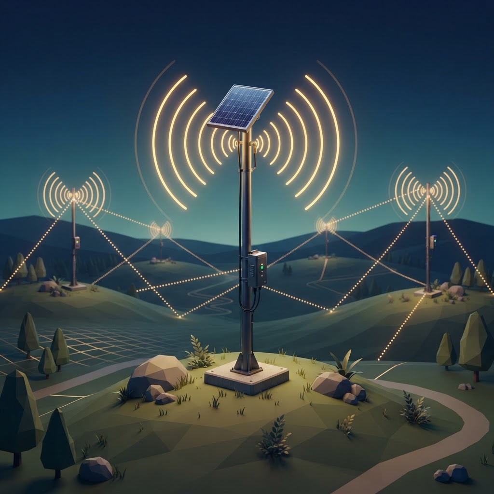
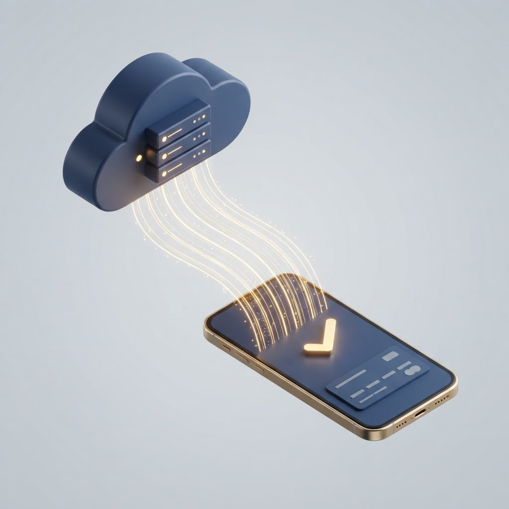
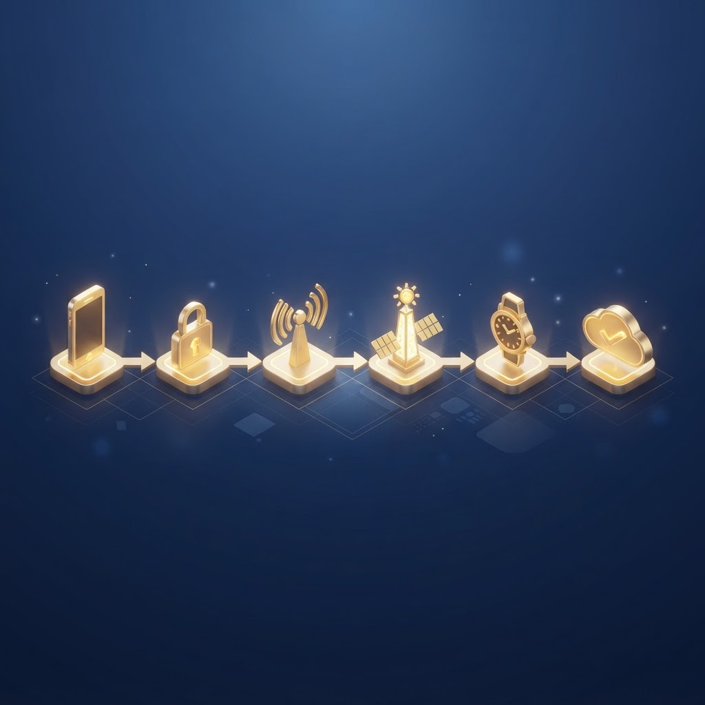

| Métrica | Cifra |
|---|---|
| Población sin acceso bancario (global) | 1.400 millones |
| Población sin acceso bancario (Nigeria) | 38 millones |
| Zonas rurales españolas con conectividad no garantizada | ~9.100 municipios (España vaciada) |
| Interrupción media de red móvil rural | 15-30% de las horas del día |
| Economía informal dependiente del efectivo (Nigeria) | ~50% del PIB |







| Capa | Especificación |
|---|---|
| Raíz de confianza en hardware | Función Físicamente Inclonable (PUF), a nivel de silicio |
| Firma criptográfica | Firma digital de curva elíptica ECC P-256 |
| Protección anti-retransmisión | Protocolo de acotación de distancia |
| Validez del token sin conexión | Tiempo de vida de 72 horas |
| Respaldo energético del nodo | Supercondensador + batería de litio, con carga solar |
| Protocolo de transmisión | NFC (ISO/IEC 14443), retransmisión en malla nodo a nodo |
| Vía de liquidación | API de Paystack a Banco de Microfinanzas autorizado a socio IMTO (transfronterizo) |
| Estado de la patente | Solicitud de patente en trámite, presentada en abril de 2026 |